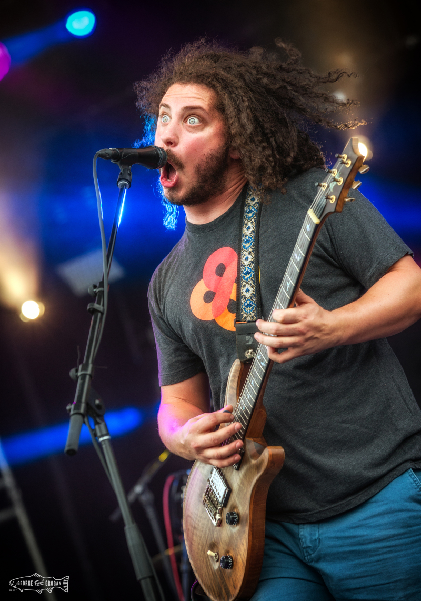
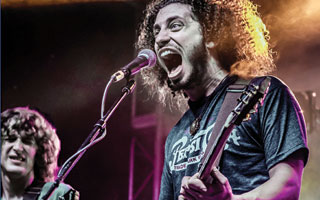
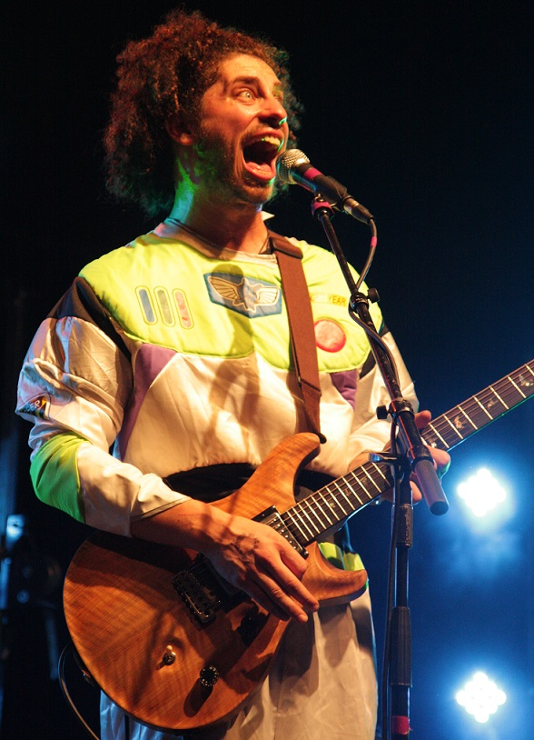
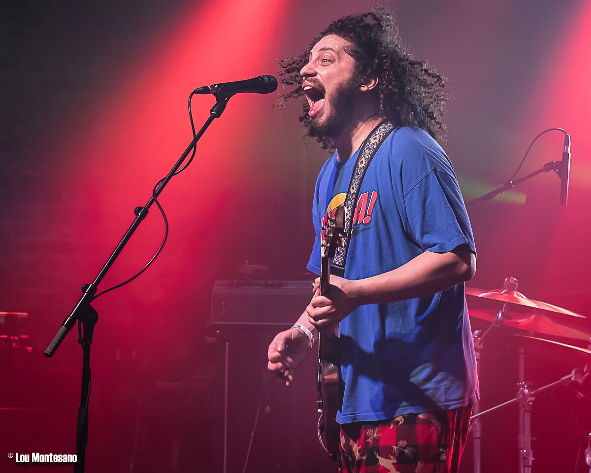
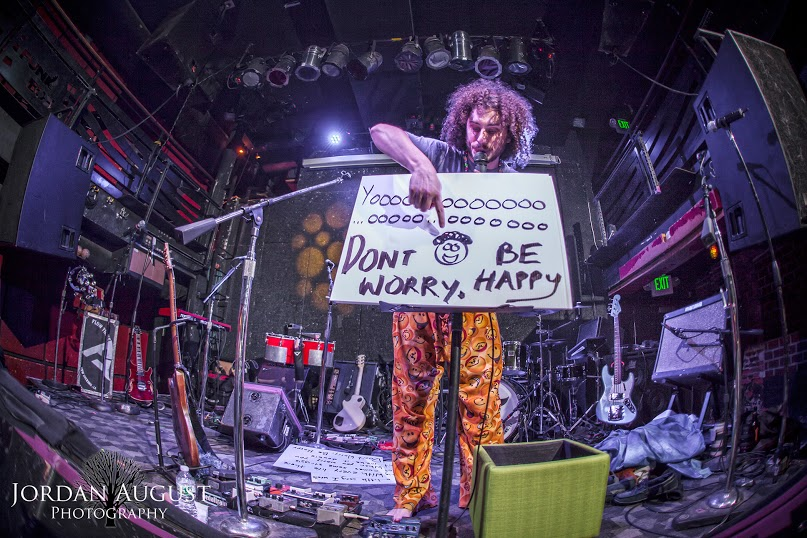
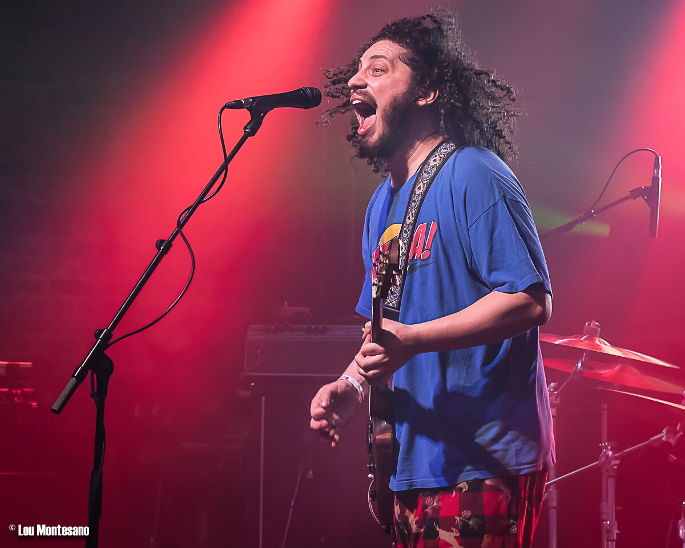
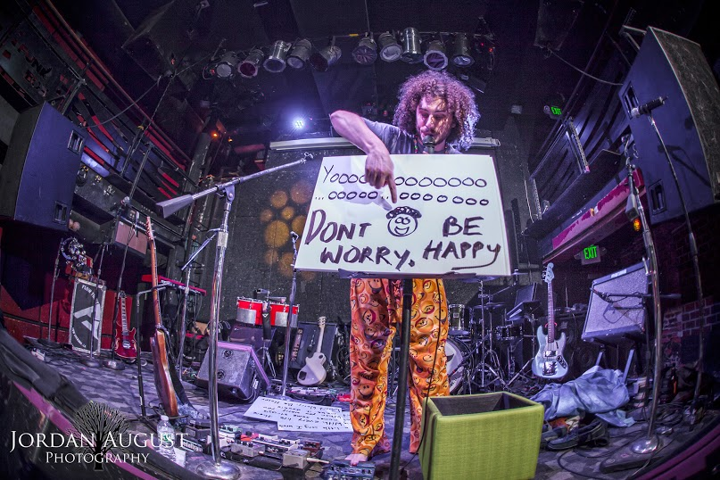
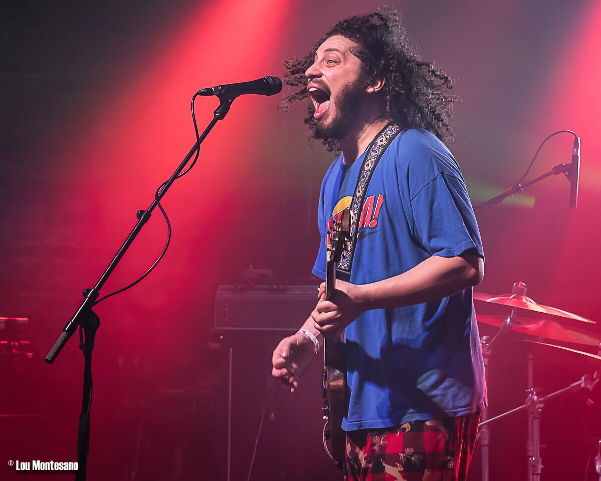
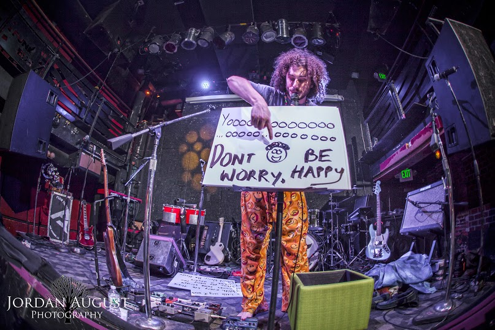

Funk, Rock, Electronic ENERGY: These four Pigeons bring it every night. Based out of Baltimore, Maryland, Pigeons Playing Ping Pong
has an undeniably unique and versatile live sound that ascends peaks of musical ecstasy. Their evolving arrangement of original compositions,
psychedelic improvisational jams, and contagious smiles have "The Flock" growing and coming back for more. With no end in sight,
Pigeons Playing Ping Pong is here to bring the party with their danceable electro-funk grooves and infectious ability to bring positive energy
to any environment.

GREG ORMOT
Lead singer and rhythm guitarist of Pigeons Playing Ping Pong and solo preformer under the name Scrambling Greg.
Greg incorperates a fari amount of comedyinto his preformances and works hard to keep the crowd on its toes and feeling good.
Greg comments on his music saying,
"All I want to do is make people smile when we play. No matter what size the crowd. The bigger the crowd the more energy is in the room, and that can
result in a really incredible experience. But even a tiny crowd is something I look forward to, because people who go to see live music go to turn
off their minds a little bit and connect on an innately subconscious and incredible level. We just want to spread that as much as possible." Greg has been preforming
with Pigeons for 8 years and they have been touring the country for 5 years now. His mission is to spread high energy psychedelic funk and good vibes. hoping to leave everyone involved
a happir person. Some of the best advice Greg says he has ever been given is
"Keep having fun, working hard and trust your gut"




This is a fan page dedicated to Greg... However, you can find the official Pigeons Playing Ping Pong Webpage HERE!

 


